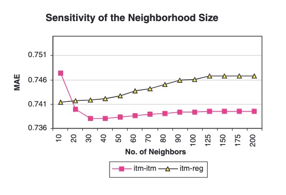
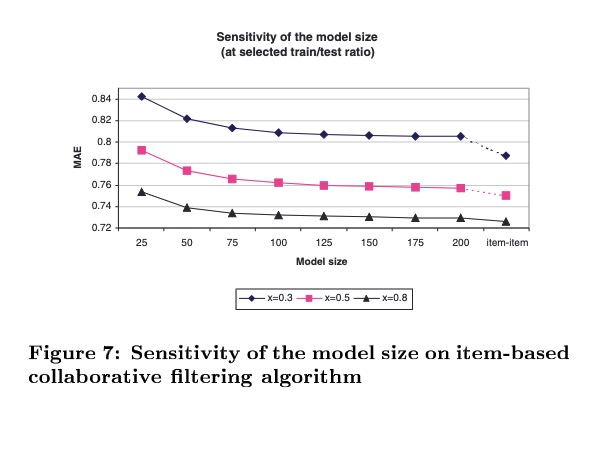

Overview
Sarwar et al.’s 2001 paper on Item-Based Collaborative Filtering is one of the first papers from the GroupLens group on estimating user-item ratings utilizing item-to-item similarities. This paper discusses an item based similarity rating scheme and much of the computational benefits one can gain from utilizing the item-based approach and a model rating estimation framework. Moreover, the authors provide thorough experiments which address the impact of data sparsity, neighborhood size, and similarity measures on the performance of this algorithm.
Introduction & Problem
The key challenges that the authors attempt to address in the paper are (i) improve the scalability of user-to-user collaborative filtering algorithms and (ii) improve the quality of the recommendations produced by these algorithms. They give an overview of existing collaborative filtering approaches which tend to be very memory intensive and non-scalable. For example, consider the rating scheme for user-to-user collaborative filtering.
\[ \hat{R}_{us} = \bar{R}_u + \frac{\sum_{v\in N(u)}\text{sim}(u, v)(R_{vs} - \bar{R}_v)}{\sum_{v\in N(u)}\mid\text{sim}(u,v)\mid} \]
This ratings approach is both non-scalable and may suffer from data sparsity.
To see why it is non-scalable, consider a given user \(u\). The construction of the neighborhood \(N(u)\) is typically performed during online-inference as the the number of co-rated items between users can change quickly (e.g. a new user who ranks 10 items upon sign-up). Therefore, this computation must be done in real-time or face some SLA, necessitating a full loop over the user based \(O(n)\) for each user-item pair we look to estimate a rating for.
To see why this method suffers from data sparsity, consider if a user has no neighbors \(N(u)\) that have rated item \(s\). In this setting the numerator is ill-defined and user-to-user based CF cannot provide recommendations.
These observations motivate the authors to abandon measuring the very costly \(O(n^2)\) user-to-user similarity problem during online inference in favor of the \(O(m^2)\) item-to-item similarity problem which can be carried out offline. The intuition is that users will enjoy products similar to what they have enjoyed in the past, and that item-to-item similarity is a more stable relationship over time, allowing for large batch computations of these scores.
Methods
Item-Based Collaborative Filtering
Similar to user-to-user based collaborative filtering, ratings can be estimated using either (i) a memory based score utilizing weighted sums of observed ratings or (ii) a model based score using rules learned from the observed ratings data. For the memory based approach, ratings are estimated as:
\[ \hat{R}_{us} = \frac{\sum_{t\in N(s)}\text{sim}(s, t)R_{ut}}{\sum_{t\in N(s)}\mid\text{sim}(s, t)\mid} \]
where the neighborhood \(N(s)\) is the set of all items that share a co-rater (e.g. someone who rated both item \(s\) and \(t\)). Notice here we do not need to mean center user \(u\)’s ratings as we only utilize their ratings in this computation. Moreover, we can pre-compute the neighborhood \(N(s)\) and the item-to-item similarities offline improving performance.
In addition to this scoring methodology, the authors introduce a regression-based model approach. They utilizing the same scoring function above by utilize the smoothed scores \(\tilde{R}_{ut}\) by first regressing the item vectors \(R_{\cdot, t}\) onto \(R_{\cdot, s}\). (Candidly, I found this section very hard to follow. I think Aggarwal’s Section 2.6 connects these ideas more clearly.)
Measuring Item Similarity
Measuring item-to-item similarity is the key to solving the collaborative filtering problem. The authors introduce three methods which are still popular today. For ease of notation, let \(r_s\in\mathbb{R}^N\) denote the ratings vector for item \(s\). Then the three methods are given by
- Cosine similarity: \[ \text{sim}(s, t) = \frac{r_s^Tr_t}{\|r_s\|_2\|r_t\|_2} \]
- Adjusted-cosine similarity: \[ \text{sim}(s, t) = \frac{\sum_{i=1}^n(R_{is} - \bar{R}_i)(R_{it} - \bar{R}_i)}{\sqrt{\sum_{i=1}^n(R_{is} - \bar{R}_i)^2}\sqrt{\sum_{i=1}^n(R_{it} - \bar{R}_i)^2}} \]
- Correlation similarity: \[ \text{sim}(s, t) = \frac{\sum_{i=1}^n(R_{is} - \bar{R}_s)(R_{it} - \bar{R}_t)}{\sqrt{\sum_{i=1}^n(R_{is} - \bar{R}_s)^2}\sqrt{\sum_{i=1}^n(R_{it} - \bar{R}_t)^2}} \]
The unifying piece of each of these similarity methods is the cosine similarity operator. The only thing that changes between these methods is which matrix of ratings it acts on.
For instance, taking \(\ell_2\)-normalized dot products of column vectors in \(R\) gives the cosine similarity. The same operation on the mean-centered rows gives the adjusted cosine similarity and mean-center columns give the correlation similarity.
Therefore, I think it’s better to think about each of these similarity measures as performing the same operation (i.e. cosine-similarity between column vectors) just on difference matrices:
- Cosine similarity: \(R\)
- Adjusted-cosine similarity: \(R - (R\mathbf{1}_m\mathbf{1}_m^T)/m\)
- Correlation similarity: \(R - (\mathbf{1}_n\mathbf{1}_n^TR)/n\)
I’m ignoring the fact that some ratings here are not-present and writing \(1/m\) and \(1/n\) for normalizing constants, but the spirit holds.
Ramifications
Compute Performance
The authors spend most of their attention not on measuring the differences between model based and memory based approaches (they do concede that model based approaches are more scalable in the long run) and more so on separating the neighborhood construction and the ratings estimation in offline and online batches, respectively.
They authors recommend that instead of computing the full neighborhood, only the top \(k\) most similar items are retained (stochastic gradient descent vibes). They call this parameter \(k\) the model size or the neighborhood size.
The authors cary out a number of experimental examples and show that
The memory based method outperforms the regression based method and demonstrate overfitting when the neighborhood size gets too large: 
The algorithm only needs the most similar items in an item’s neighborhood to estimate ratings accurately. In the paper they state “… we were within 96% and 98.3% of the full item-item scheme’s accuracy using only 1.3% and 3.0% of the items, respectively!” 
These findings aren’t too surprising but do garner insights into ways to speed up this algorithm in online inference settings and again demonstrates bias-variance tradeoffs in offline model training.
Recommendation Performance
The paper mostly focused on assessing the algorithms performance with respect to MAE utilizing a train-test split. For collaborative filtering approaches, I also find this a bit concerning because severing the user-item bipartite graph impacts training of all collaborative filtering methods. Nonetheless, the authors carry out a classic training-testing split, and cross validate on the training set to tune the item-to-item collaborative filtering methods. Their key findings include
- Adjusted-cosine similarity out performs other similarity methods
- After tuning, item-to-item give similar, if not preferable, results compared to user-to-user methods for certain combinations of data sparsity and neighborhood sizes.
In aggregate, I think these results validate the performance of this method as a valid and interesting alternative to user-to-user collaborative filtering.
Conclusion
In conclusion, the paper introduces item-to-item collaborative filtering as a method that gives similar performance as user-to-user collaborative filtering with potential gains in performance by moving much of the heavy computation to offline batch frameworks. Moreover, by proposing modeling techniques that do not use the training data explicitly in the creation of the rating estimates (i.e. model based methods) these methods will continue to offer compute enhancements.
I think this paper offers a nice introduction to a different view of collaborative filtering while stressing some of the practical limitations of neighborhood approaches in real-time systems. A few thoughts I have leaving the paper:
This naturally begs the question of utilizing both user level and item level neighborhoods when performing localized-averaging for ratings estimation. Something along the lines of \[ \hat{R}_{us} = \frac{\sum_{t\in N(s)}\sum_{v\in N(u)}\text{sim}(v, t)R_{vt}}{\sum_{t\in N(s)}\sum_{v\in N(u)}\mid \text{sim}(v, t)\mid} \] which is starting to look very page-rank.
None of these papers are utilizing user or item features at all. These similarity measures could easily utilize features on each item which would greatly improve the quality of these measures.
Performing training-testing splits on graph data remain very difficult.